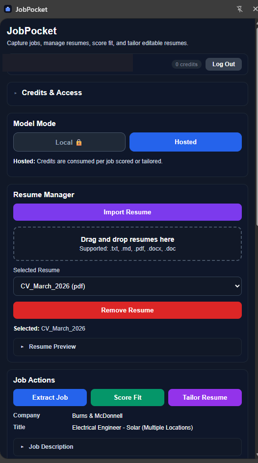

Extract Job
Pull the job title, company, and full description from the page in one click.
JobPocket sits right next to any job posting. One click to extract the role, one click to score your fit, one click to get a tailored resume — downloaded as a polished DOCX. No tabs, no copy-paste, no starting from scratch.
Free to install. 10 AI credits included. No account required.

Built for job seekers who are tired of rewriting the same resume over and over
Know whether a job is worth your time before you start writing.
Tailor your entire resume to the specific role, not just one section.
Stay on the job page. Extract, score, tailor, and download — all in one place.
JobPocket is built around the four actions that actually move a job application forward.
Pull the job title, company, and full description from the page in one click.
Get a numeric fit score, a hire/pass recommendation, and a concise breakdown of your strengths and gaps.
AI rewrites your full resume to match the role's language and priorities. Edit in the built-in text editor before downloading.
Download a professionally formatted Word document with configurable fonts, margins, and section colors.
Every job you score is saved automatically. Mark jobs as applied and track your pipeline — all stored locally.
Import and manage several resume versions. Drag-and-drop TXT, MD, PDF, DOCX, or DOC files.
Unlock once and run everything through your own Ollama instance. No credits, no data leaving your machine.
Navigate to any job listing. Click Extract Job and JobPocket reads the page automatically.
Click Score Fit to get an AI-generated match score, recommendation, and strengths/gaps summary against your resume.
Click Tailor Resume. Review and edit the result, then download a polished Markdown or DOCX file.
Install JobPocket and tailor your first resume in under a minute. 10 free credits included.
Buy credits for hosted AI, or unlock local mode once and never pay per action again.
Use our cloud AI — no setup required.
Resume data is processed in real time and never stored on our servers.
$25 one-time
Run everything through your own Ollama. Forever.
Install JobPocket and get 10 free AI credits to try scoring and tailoring on your next application.
Free to install. 10 credits included. No subscription required.